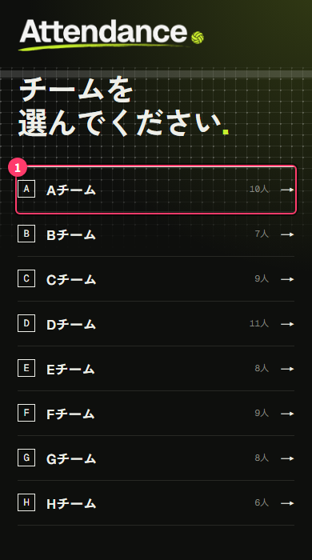
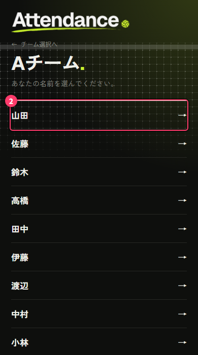
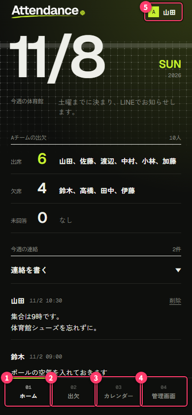
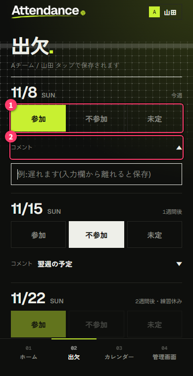
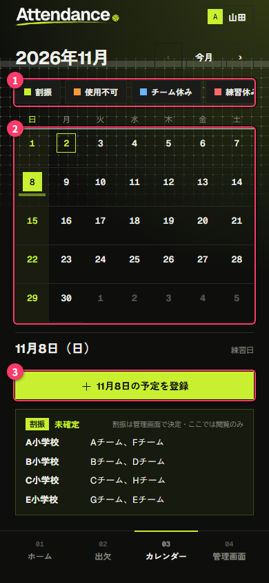
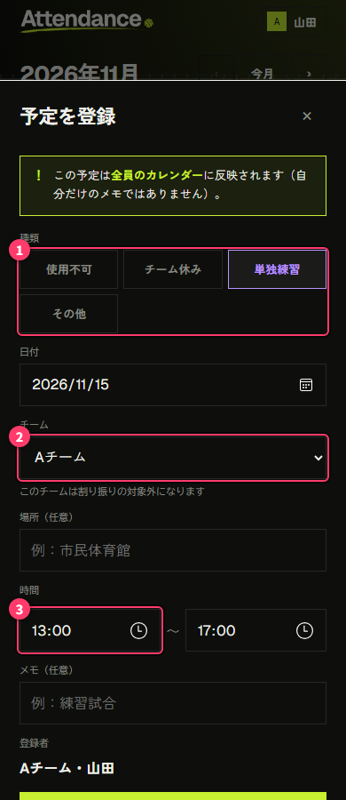

Attendance ユーザーガイド(メンバー向け).
毎週日曜の練習の出欠を、スマホから回答するためのアプリです。今週の体育館やチームの連絡もここで確認できます。
- 開くページ: https://attendance-hakata.github.io/Attendance/
- ホーム画面に追加しておくと、アプリのようにすぐ開けます(ブラウザのメニューから「ホーム画面に追加」)
- このガイドは、アプリの右上の名前 →「使い方」からも開けます
1. はじめて開いたとき
- 一覧から、自分のチームを選びます
- 続けて、自分の名前を選びます


これで準備は完了です。パスワードの入力はありません。
- 選んだチームと名前は、この端末に保存されます。次からはそのままホームが開きます
- 保存に期限はありません
- 名前が一覧にないときは、チームの代表に追加を頼んでください
選び直したいとき
右上の名前(チームの記号と名前のボタン)をタップし、「ログインを変更する」を押すと、チームと名前を選び直せます。
2. 画面の構成
画面の下に、4つのタブがあります。右上には自分の名前が出ています。

| 番号 | 場所 | できること |
|---|---|---|
| ① | ホーム | 今週の体育館、チームの出欠、連絡を見る |
| ② | 出欠 | 4週分の出欠とコメントを回答する |
| ③ | カレンダー | 体育館の使用不可やチームの休みなどの予定を見る・登録する |
| ④ | 管理画面 | チームの代表や割当担当が使う画面です(パスが必要)。メンバーは使いません |
| ⑤ | 自分の名前 | 選び直し、使い方ガイドを開く |
3. ホーム
次の日曜について、次のことがわかります。
- 今週の体育館
- 決まると、体育館名、使用時間、一緒に練習するチームが表示されます
- 「地図を開く」で場所を確認できます
- 決まるまでは「土曜までに決まり、LINEでお知らせします。」と表示されます
- 練習休み: 全チームの練習が休みの週は、理由とともに表示されます
- 単独練習: 自分のチームが割り振りを使わずに独自で練習する週は、「今週の練習 / 単独練習」として時間と場所が表示されます
- チーム休み: 自分のチームが休みの週は「チーム休み」と表示されます
- 今週の予定: 体育館の使用不可やチームの休みなど、その日の予定です
- チームの出欠: 出席(参加)・欠席(不参加)・未回答の人数と名前です。未定は、回答した人がいるときだけ表示されます
- 今週の連絡: チーム内の掲示板です(→ 5章)
- 個人コメント: メンバーが出欠画面で書いたコメントです
4. 出欠の回答
- 下の「出欠」タブを開きます
- 週ごとに「参加」「不参加」「未定」のどれかをタップします(①)
- 必要なら「コメント」をタップして入力します(②)

- タップした時点で保存されます。 保存ボタンはありません
- 4週先まで回答できます。予定がわかっている週は早めに回答してください
- 「締切済み」や「練習休み」と表示された週は、回答を変えられません。変えたいときはチームの代表に連絡してください
コメント
各週の「コメント」をタップすると入力欄が開きます(100文字まで)。
- 例: 「遅れます」「途中で抜けます」
- 入力欄から離れると保存されます
- その週になると、ホームの「個人コメント」にチームの全員から見える形で表示されます
5. 今週の連絡(チームの掲示板)
ホームの「連絡を書く」をタップすると入力欄が開きます。内容を書いて「投稿する」を押してください(200文字まで)。
- 投稿は、同じチームのメンバー全員に見えます。投稿者の名前と時刻も表示されます
- 自分の投稿は「削除」で消せます。チームの代表などパスを持つ人も削除できます
6. カレンダー
月ごとのカレンダーで、練習に関わる予定を確認できます。日付をタップすると、その日の予定が下に表示されます。
| 色の種類 | 内容 |
|---|---|
| 割振 | 体育館の割当(確定済みかどうか) |
| 使用不可 | 学校行事などで体育館が使えない日 |
| チーム休み | 大会などでチームが練習を休む日 |
| 練習休み | 全チームの練習が休みの日 |
| 単独練習 | チームが割り振りを使わずに独自で練習する日 |
| 時間変更 | その日だけ、体育館の使用時間が変わる日 |
| その他 | 代表者ミーティングなど |

上の種類のボタン(①)をタップすると、表示を絞り込めます。日付(②)をタップすると、その日の予定が下に出ます。
練習時間は、特に決まりがなければ 13:00〜17:00 です。変わる日は、カレンダーの「時間変更」で確認できます。
予定を登録する
体育館が使えない日などがわかったら、登録をお願いします。
- 日付をタップし、「◯月◯日の予定を登録」(③)を押します
- 種類を選び、必要な項目を入れて「登録」を押します

メンバーが登録できる種類:
| 種類 | 入れる内容 |
|---|---|
| 使用不可 | 体育館と理由 |
| チーム休み | 理由(チームは自分のチームに決まります) |
| 単独練習 | チーム、時間(最初は 13:00〜17:00)、場所(任意)。練習日(日曜)だけ選べます |
| その他 | 内容 |
- 登録した予定は、全員のカレンダーに表示されます(自分だけのメモではありません)
- 登録者として、あなたのチーム名と名前が残ります
- 単独練習は、どのチームの予定でも登録できます。他のチームからも見えます
- 次の日曜の割振がすでに作られているときは、その日の使用不可・チーム休み・単独練習は登録できません。割当担当に連絡してください
- 練習休みと時間変更は、割当担当が登録します
- 登録した予定は「編集」から修正・削除できます。他のチームの「チーム休み」は編集できません
7. 困ったとき
| こんなとき | どうする |
|---|---|
| 画面がエラーになる | 時間をおいて「読み込み直す」を押してください |
| 自分の名前がない、名前が違う | チームの代表に連絡してください |
| 締め切った週の回答を変えたい | チームの代表、または割当担当に連絡してください |
| 機種変更した | 新しい端末で開き、チームと名前を選び直すだけです |
| 他の人の端末で開いてしまった | 右上の名前 →「ログインを変更する」で選び直してください |